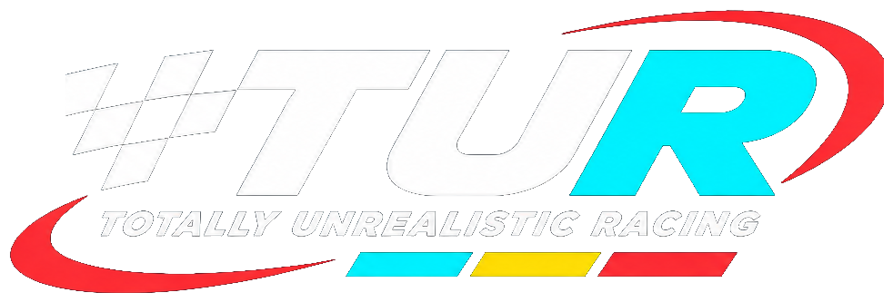

RACE • CREATE • SHARE
Your track.
Your rules.
Build your own circuits, take them for a spin and share them with friends.
♡ Support TUR Development ↗Free to play. Always optional.
# Find & share tracks on Reddit ↗COMING LATER Goals & achievements
CREATE • TUNE • EXPERIMENT
Workshop.
Tune your car, experiment with AI drivers, and build or share tracks.
MAKE IT YOURS
Options.
Choose your controls and race sounds. Settings are saved in this browser.
Controls appear while driving. You can also switch them on or off in the race pause menu.
Only the checkpoint changes; countdown, lap and finish announcements stay the same.
These controls are shared with the track builder and driving settings.
TUR / GARAGE
Vehicle tuning
Build overview
Actual handling also depends on the surface, slope and your driving.
⚒ Upgrades & tuning
Temporary race markers are added when needed.
Race the pack, earn points and save your best times.
Personal bests for this pack
Race time starts at Go; lap time starts at the line. Records use the actual direction and lap count; vehicle setups, environments and lighting share records.
Championship standings
Track personal bests
Race time starts at Go; lap time starts at the line. Times are saved in this browser by track, direction and lap count. Different vehicle setups, difficulties, environments and lighting share records.
WATCH • TUNE • EXPERIMENT
AI workshop.
Run a race without a player car and tune individual drivers as you watch.
Unmarked circuits receive temporary race markers. Your saved track and editor draft stay unchanged.
YOUR LOCAL LIBRARY
My tracks.
Choose a track pack and open a track in the builder, or keep a text backup to share and restore later.
Export a selection of tracks
Use Ctrl-click (Command-click on Mac), or left / right and A or Space, to select several tracks.
Find tracks to download and import, or visit Edit TUR packs to import a pack.
Imports from a combined backup are added as copies. Single TS2 files open in the builder. Your tracks remain stored in this browser.
CREATE • EDIT • SHARE
TUR packs.
Create an ordered collection of track copies. Opening a pack track in the builder links its edits to that pack.
Paste pack JSON
Paste a complete TUR or older TrackShift pack. Checking imports it into My packs.
Packs include complete track codes. Re-importing an existing pack ID is blocked. To remove a duplicate, select it in My packs and delete it; check its tracks or export it first. Copy pack with new ID creates an independent pack, including for older packs without a UUID.
Arrow keys or D-pad: move • Left / right: change track • Enter / A: select • Esc / B: back